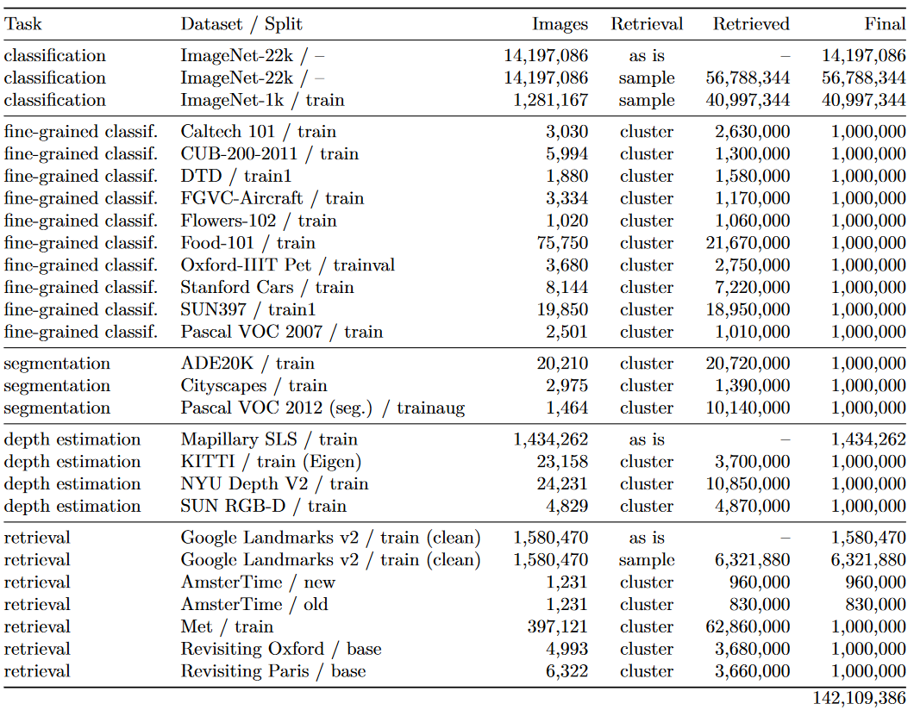
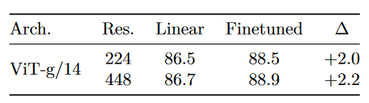
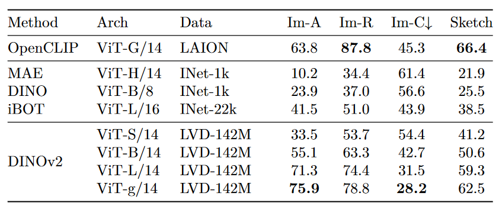
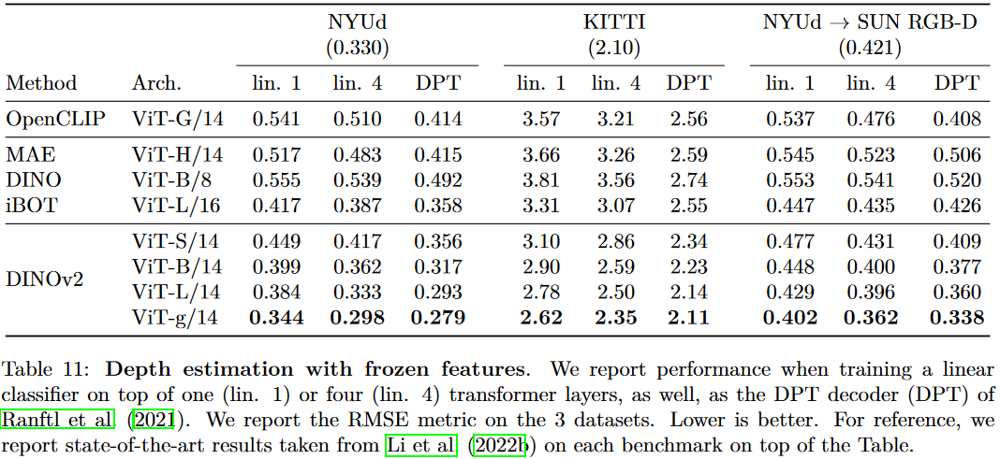
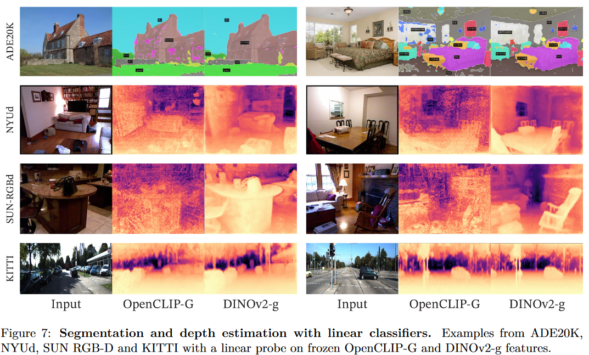
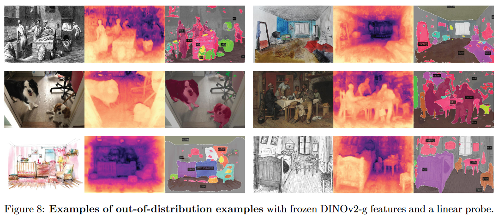
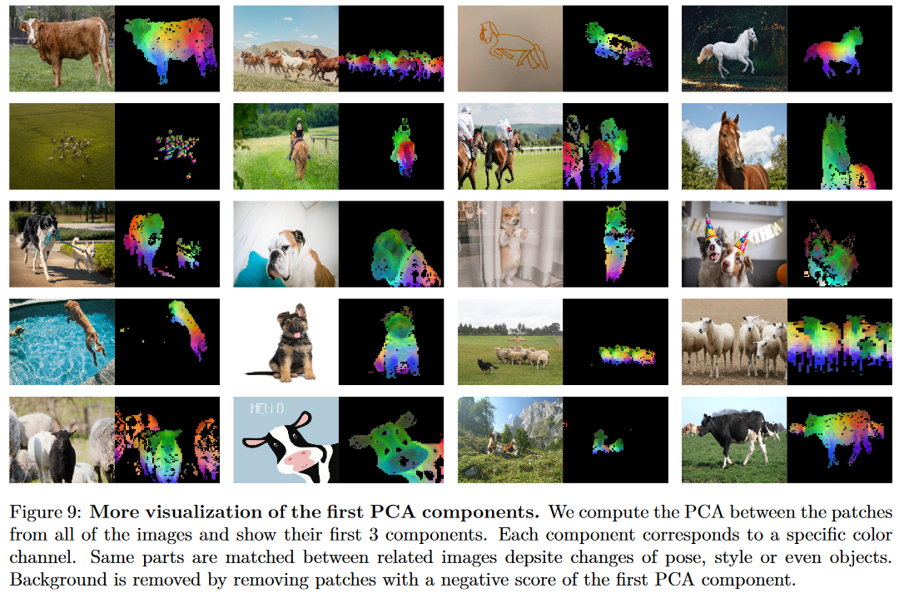
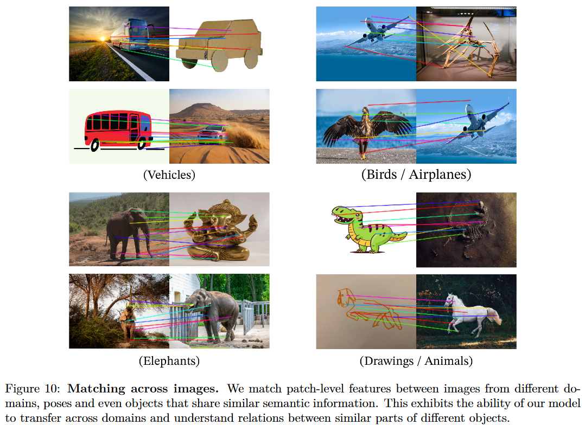

1. 引言
参考NLP在大规模预训练模型上的突破，在CV中提取通用的视觉特征，可以是用于分类任务的图像级别特征，也可以是用于分割任务的像素级别特征。利用自监督的方法，在不同源、足够多的数据上训练即可生成这样的特征。
本文工作探索了自监督学习是否在大规模数据上预训练有潜力学习通用的视觉特征。本文大部分技术贡献都是专为稳定和加速判别性自监督学习定制。
对于预训练数据，本文构建了一个自动管道，从大量未处理的图像集合中筛选和平衡数据集。在本文工作中，使用一种朴素的聚类方法解决了在处理wild数据时重新平衡概念并避免在少数主导模式上的过拟合问题，并构建了一个小型但多样的142M图像的语料库来验证本文方法。
本文提出了用不同ViT框架训练的DINOv2模型，下图展示了DINOv2在多种图像级和像素级CV任务中的性能（深蓝色为DINOv2，浅橙色是自监督方法，深粉色为弱监督方法），验证了与最好的开源的弱监督模型相比，自监督训练是学习可迁移冻结特征的一个很好的候选方法。
2. 数据处理(Data Processing)
数据处理pipeline如下图所示：
-
数据来源(Data selection)
构建的LVD-142M数据集的所用的数据集如下表所示，该集合旨在为图像级和密集识别提供涵盖各种下游视觉任务的图像。总共有1.2B图像。
 -
图像相似度(Image similarity)
使用余弦相似度(cosine similarity)将图像特征与下面的相似度函数m比较： $$ m(s,r)=\text{cos-similarity}(f(s),f(r))=\frac{f(s)\cdot f(r)}{||f(s)||_2||f(r)||_2} $$ 其中
s和r是一对比较的图像，f是模型生成的特征。 -
去重(Deduplication)
将
[A self-supervised descriptor for image copy detection]的拷贝检测流程应用到未处理的数据中去除重复图像，减少冗余增加图像多样性。- Self-deduplication：检索每幅图像的k=64最近邻(余弦相似度)，只考虑相似度>0.6的邻居，通过可扩展的不相交集数据结构实现来提取关联k-NN图的连通分支，对重复图像的每个分量只保留一个代表性图像。自去重的结果有1.1B图像。
- Relative deduplication：丢弃上一步骤中与评估数据集的训练和测试划分中相似的图像，采用与自去重中相似的步骤，丢弃相似度>0.45的所有重复图像。剩下744M数据。
- Retrieval：检索相似图像来构建数据集。首先使用在ImageNet-22k预训练的ViT-H/16网络来计算Image Embedding，并使用余弦相似度来作为图像之间的距离度量。然后对未处理的数据进行k-means聚类。给定一个用于检索的查询数据集，如果它足够大，为每个查询图像检索N个(4)最近邻。如果较小，则从每个查询图像对应的簇中采样M张图像。
3. 判别性自监督预训练(Discriminative Self-supervised Pre-training)
使用一种判别性的自监督方法来学习特征，该方法可以看作是以SwAV为中心的DINO和iBOT损失的组合
- Image-level objective：考虑从学生和教师网络中提取特征之间的交叉熵损失。这两个特征来自ViT的class token，由同一张图的不同crop得到。学习学生网络的参数，通过指数异动平均(EMA)来构建教师网络。
- Patch-level objective：随机mask学生网络输入图像的一些patch，然后在两个网络的每个掩码快上添加交叉熵损失，与图像级的损失结合。
- Untying head weights between both objectives：将两个目标相关的权重绑定在一起会使得模型在patch-level上欠拟合，image-level上过拟合。通过解绑这些权重提高了在两个尺度上的性能。
- Sinkhorn-Knopp centering：使用
Sinkhorn-Knopp(SK)批归一化替代DINO和iBot的教师softmax-centering步骤。运行SK算法进行3轮迭代；对于学生，使用softmax归一化。 - KoLeo regularizer：KoLeo 正则项来自于 Kozachenko-Leonenko differential entropy estimator.给定一个含有n向量的集合$(x_i,\dots,x_n)$，$L_{\text{koleo}}=-\frac{1}{n}\sum_{i=1}^{n}{\log(d_{n,i})}$ ，其中 $d_{n,i}=\min_{j\neq i}||x_i-x_j||$是$x_i$与batch内其他点的最小距离。在计算koLeo正则项前还对特征进行L2正则化。
- Adapting the resolution：高分辨率是分割或检测等像素级下游任务的关键，因为小物体在低分辨率下消失。然而，在高分辨率下进行训练需要更长的时间和更大内存。相反，在预训练结束的短时间内将图像的分辨率提高到518 × 518。
Fixing the train-test resolution discrepancy
4. 高效实现(Efficient implementation)
相较于iBOT，DINOv2运行速度快2倍，使用1/3的内存。
- Fast and memory-efficient attention：实现自己版本的
FlashAttention以提高自注意力层的效率。由于GPU硬件的特性，当每个头(head)的嵌入维度为64倍数时效率最高，当全嵌入维度为256倍数时矩阵运算更高效。因此本文的ViT-g架构使用embedding dimension = 1536(24 heads, 64 dim/head)，而非embedding dimension = 1408(16 heads, 88 dim/head)。本文的ViT-g有1.1B参数。 - Nested tensors in self-attention
- Efficient stochastic depth：本文实现了随机深度的一个高效版本，它跳过了丢弃残差计算而不是掩盖结果，以近似丢弃率的比例节省内存和计算量。本文丢弃率
d=40%，显著提高计算效率和内存使用率。该实现在批维度上随机重排B个样本，并对前$(1-d)\times B$个样本分块计算。 - Fully-Sharded Data Parallel (FSDP)：使用AdamW优化器，对于ViT-g将使用16G内存。FSDP节省跨GPU的通信开销。
- 模型蒸馏(Model Distillation)
5. 消融研究(Ablation Studies)
设置一系列消融研究来验证本文pipeline中不同组件：技术修改、预训练数据和模型蒸馏。
5.1 Improved Training Recipe
本文方法在iBOT基础上进行改进。本文通过在一个baseline iBOT模型中依次添加各个组件，训练了多个模型，结果如下图所示。几乎每个组件都能带来性能的提升，只有Layer Scale和Stochastic Depth在linear中降低了性能，但它们提高了训练的稳定性。
5.2 Pretraining Data Source
预训练数据的质量直接影响到特征的质量，本实验对比LVD-142M，ImageNet-22k和未处理的原始数据。结果如下图所示。可见，在LVD-142M上预训练能够在ImageNet-1k上取得最好性能，同时在其他测试集也能取得较好的性能。于是可以得出LVD-142M数据集提供了不同类型的平衡的数据，能带来性能的提升。

5.3 Model Size and Data
模型大小与数据量大小的重要性实验结果如下图所示。
5.4 Loss Components
验证KoLeo Loss和masked image modeling(MIM)的影响，结果如下图所示：
5.5 Impact of Knowledge Distillation
验证模型蒸馏的有效性，比较ViT-L/14从头训练和从ViT-g/14蒸馏的性能，结果如下图所示。可见，蒸馏得到的模型性能更高，甚至在有的benchmark上超过了教师模型。
5.6 Impact of Resolution
衡量在预训练过程中改变分辨率对图像级和patch级特征的影响，结果如下图所示。可见，在训练结尾使用高分辨率训练10k次迭代，在增加很少计算量的同时带来和高分辨率训练几乎一样好的性能。
6. 结果(Results)
Baseline. ImageNet-1k top-1 ACC. 在其他评估中报告SSL(自监督)模型中最好的四个，以及弱监督中最好的OpenCLIP-G模型。
与开源的SOTA自监督模型比较：MAE, DINO, SEERv2, MSN, EsViT, Mugs, iBOT.
6.1 ImageNet Classification
冻结特征层，仅训练一个线性分类器。
-
能否微调编码器(Can we finetune the encoders)？
下图是微调后的实验结果，取得了明显的性能提升，因此微调是可选的策略。
 -
鲁棒性分析(Robustness analysis)
下图是泛化性(鲁棒性)的测试结果，相较于SSL模型，本文方法取得了明显更好的鲁棒性；相较于弱监督模型，仅在Im-R和Sketch上稍微落后。

6.2 Additional Image and Video classification Benchmarks
6.3 Instance Recognition
6.4 Dense Recognition Tasks
-
语义分割(Semantic segmentation)

-
深度估计(Depth estimation)

6.5 定性结果(Qualitative Results)
-
语义分割和深度估计(Semantic Segmentation and Depth Estimation)
 -
分布外的泛化性(Out-of-distribution generalization)
分布外数据的分割和深度估计例子如下图所示，展现了在不同特征域中良好的迁移性。
 -
PCA of patch features
 -
块匹配(Patch matching)
